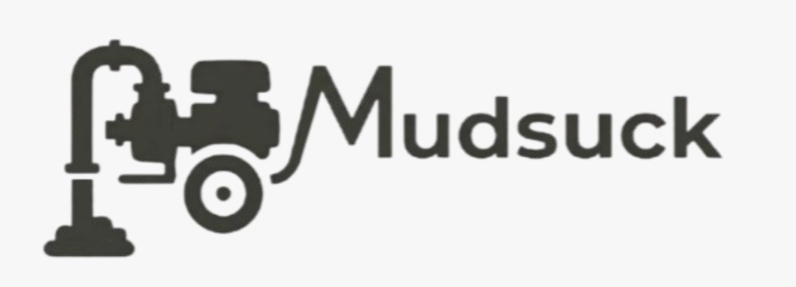

Costo de Fabricación
El prototipo está diseñado con materiales accesibles y de fabricación local para mantener un costo bajo y permitir su rápida producción en zonas de desastre.

Presupuesto detallado para la fabricación local y movilización del prototipo Mudsuck.
El prototipo está diseñado con materiales accesibles y de fabricación local para mantener un costo bajo y permitir su rápida producción en zonas de desastre.
Su diseño portátil y ligero permite transportarlo fácilmente en vehículos pequeños o incluso a pie hacia las viviendas anegadas.
Al ser un sistema mecánico sencillo, el mantenimiento requiere piezas de bajo costo y puede ser realizado por los mismos usuarios.